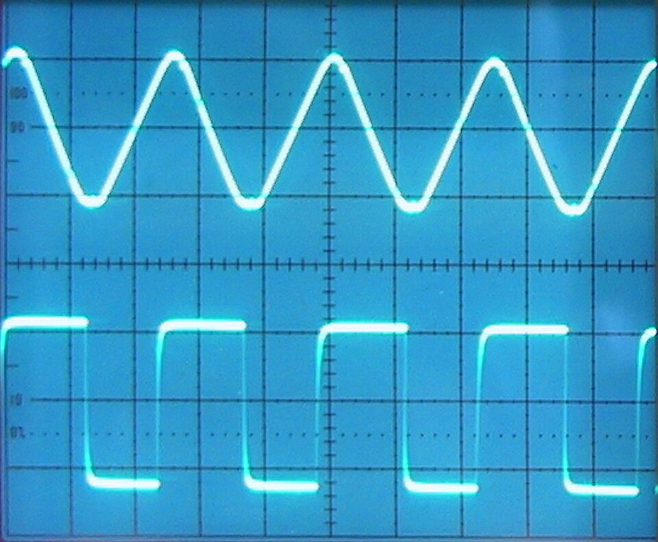

E06 — Señales y Sistemas
"Toda señal compleja es una suma de ondas simples. Fourier lo demostró en 1807 — y es la base del audio, la radio, el WiFi, los JPEG y la IA." — la idea más rentable de la ingeniería
Acá la matemática "abstracta" del campus (álgebra lineal de M02, cálculo de M03) revela su cara física. Una señal es un voltaje que cambia en el tiempo; entender cómo descomponerla y procesarla es la base del DSP, las comunicaciones y el origen de los datos que alimenta la IA.
1. ¿Qué es una señal?
| Señal | Qué varía | Ejemplo |
|---|---|---|
| Audio | Presión del aire → voltaje del micrófono | Voz, música |
| Imagen | Intensidad de luz por píxel | Cámara (M42) |
| Biológica | Voltaje del cuerpo | ECG, EEG |
| RF | Campo electromagnético | WiFi, radio, 5G |
2. Dominio del tiempo vs dominio de la frecuencia
- Tiempo: "el voltaje en cada instante" (lo que ves en un osciloscopio).
- Frecuencia: "de qué ondas está hecha" (lo que ves en un analizador de espectro).

3. La Transformada de Fourier
Señal compleja = seno(f1) × a1
+ seno(f2) × a2
+ seno(f3) × a3
+ ...
Fourier te dice los valores a1, a2, a3... (cuánto de cada frecuencia)4. Muestreo: del mundo continuo al discreto
5. El Teorema de Nyquist (el más importante)
📡 Simulador de muestreo y aliasing (Nyquist)
6. Filtros: dejar pasar ciertas frecuencias
| Filtro | Deja pasar | Uso |
|---|---|---|
| Pasa-bajos | Frecuencias bajas | Quitar ruido agudo, suavizar (anti-aliasing) |
| Pasa-altos | Frecuencias altas | Quitar offset DC, deriva lenta |
| Pasa-banda | Un rango | Sintonizar una emisora de radio |
| Rechaza-banda (notch) | Todo menos un rango | Eliminar el zumbido de 50/60 Hz de la red |
prom = prom*0.9 + nuevo*0.1) ERA un filtro pasa-bajos digital. Acá entendés POR QUÉ funciona: atenúa las frecuencias altas (cambios bruscos = ruido) y deja pasar las bajas (la tendencia). E07 lo formaliza con FIR/IIR.
7. Sistemas: cómo responden a las señales
8. Práctica
- Falstad Fourier — armá ondas y ve su espectro en vivo.
- Python:
numpy.fft.fft()+ matplotlib para ver el espectro de un audio. - Reto: grabá un silbido, sacá su FFT y encontrá su frecuencia fundamental.
9. Errores típicos
10. Recursos
- 3Blue1Brown — But what is the Fourier Transform? (visualización imperdible)
- The Scientist and Engineer's Guide to DSP (gratis online)
- "Signals and Systems" (Oppenheim) — el clásico universitario
✅ Checkpoint
1. ¿Qué dice la Transformada de Fourier?
Que toda señal periódica es una suma de senos y cosenos de distintas frecuencias. Fourier calcula cuánto de cada frecuencia contiene una señal, permitiendo verla en el dominio de la frecuencia en vez del tiempo.
2. ¿Qué dice el Teorema de Nyquist?
Para capturar una señal sin pérdida hay que muestrearla a más del doble de su frecuencia máxima (fs > 2·f_max). Por eso el audio (oído hasta ~20kHz) se muestrea a 44.1kHz. Por debajo aparece aliasing.
3. ¿Qué es el aliasing?
Cuando muestreás demasiado lento, una frecuencia alta se "disfraza" de una baja inexistente, arruinando la señal. Es el efecto de "ruedas girando al revés" en video. Se previene con un filtro anti-aliasing antes del ADC.
4. ¿Cómo conecta Fourier con el álgebra lineal de M02?
Descomponer una señal en frecuencias es proyectarla sobre una base ortogonal de senos/cosenos — exactamente el concepto de base y proyección de M02. Fourier es álgebra lineal aplicada a señales.
5. ¿Por qué un píxel es muestreo?
Una cámara muestrea la luz en una grilla espacial; la resolución es la frecuencia de muestreo espacial. El aliasing espacial son los patrones moiré. La teoría de Nyquist del audio rige por qué baja resolución = pérdida de detalle (conecta con M42 Visión).
6. ¿Qué relación hay entre convolución y Deep Learning?
La convolución que define un sistema LTI es la MISMA operación de las redes convolucionales (CNN) de M40/M42. Cuando una CNN convoluciona un kernel sobre una imagen para detectar features, hace lo que un sistema LTI hace con una señal.